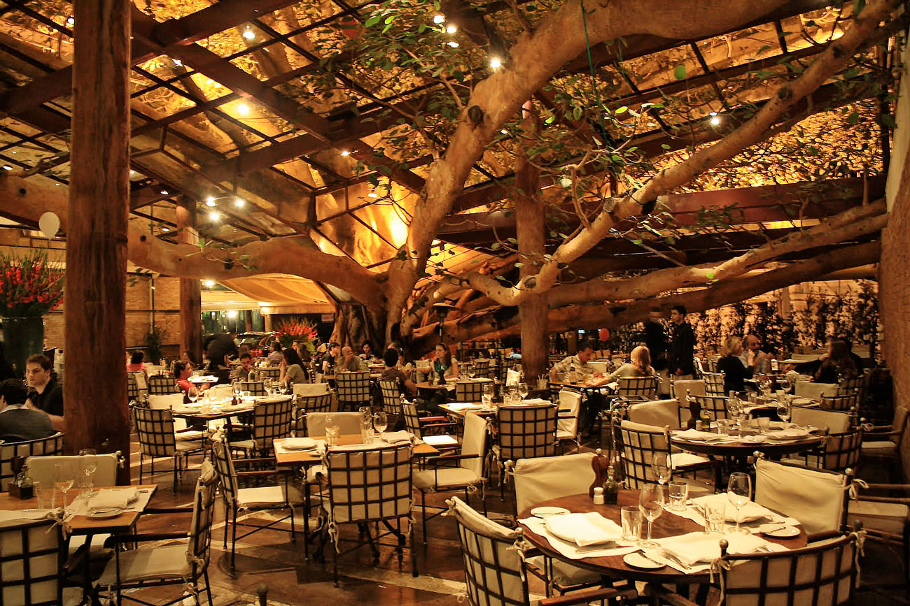
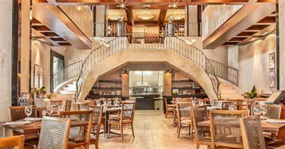
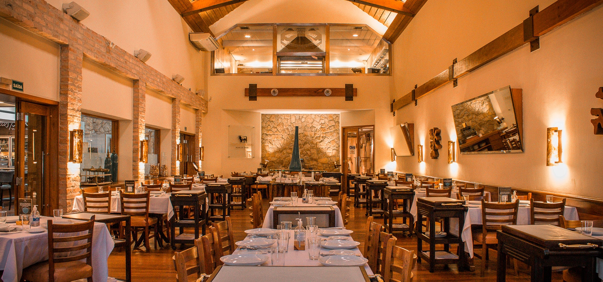
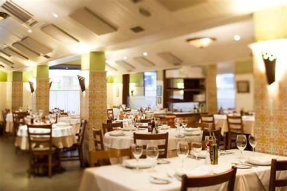
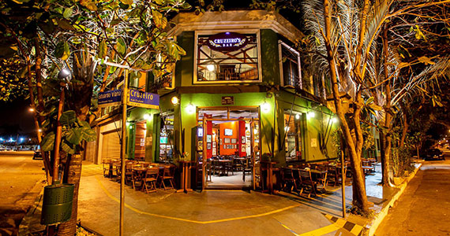
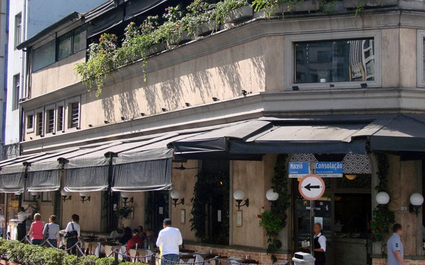

Figueira Rubayat
local
muito amplo e decorado, o
nome se dá por uma
enorme figueira sobre o
restaurante. Considerado
por muitos o melhor de sp,
as entradas não foram muito
espetaculares com o couvert
vindo com pães finos e pães de
queijo, além de um stake tartare
ardido, mas que um creme que
acompanha deve ser comido junto para
amenizar o sabor. Senti falta de cortes mais
gorduroso como ancho e prime rib e acho isso
um buraco no cardápio. Entretanto capricham
no que se propõem a fazer, com carnes muito
macias e destaque para a estrela da noite o
carré de cordeiro: diferente de todos os outros
restaurantes, por ser de carneiro novo.
Acompanhamentos muito bons embora falte
algumas coisas, como fritas. A sobremesa é
muito boa, e a opção para 2 vem várias em uma.
Todas boas, mas nada de especial. É um
restaurante gourmet de alta classe, o que
explica o motivo das carnes mais “leves” e o
acompanhamentos mais estilizados ( como o
palmito gratinado, muito bom ) . Bebidas
comuns, a da casa é refrescante, porém sem
muito sabor diferente.

| Melhor Prato |
Preço Médio |
| Baby lamb |
R$ 380,00 |
Clique aqui para acessar o site e realizar reserva
clique aqui para acessar o cardápio digital
Corrientes 348
cortes
argentinos de alta qualidade,
ambiente extremamente
sofisticado, porém o preço não
colabora. Muito bom para
comemorar datas
importantes, ótimo
atendimento,
sobremesa clássica
porém saborosa,
entradas de pão de
alho não agradou.
Melhor prato : chorizo
Valor médio :300
� : melhor qualidade de carne

| Melhor Prato |
Preço Médio |
| Chorizo |
R$ 300,00 |
Clique aqui para acessar o site e realizar reserva
clique aqui para acessar o cardápio digital
Templo da Carne Marcos Bassi
ambiente
mais tradicional, qualidade da carne muito boa,
porem falta acompanhamentos, pois devem ser
pedidos a parte e não possui grande variedade.
A famosa entrada de alho assado não é grande
destaque pois tem um gosto meio doce, embora
não seja ruim. Pouca diversidade de
sobremesas. Destaca-se mais pelo nome da
rede bassi e qualidade do corte .

| Melhor Prato |
Preço Médio |
| ancho |
R$ 260,00 |
Clique aqui para acessar o site e realizar reserva
clique aqui para acessar o cardápio digital
Rodeio
salão bonito, porém com aspecto
de churrascaria clássica. Atendimento excelente
e generoso. O que se destaca é o preço,
extremamente caro do restaurante, o corte não
impressionou, um básico porém creio que
deixaram o
ponto muito a
menos, mesmo
assim saboroso.
Entretanto
embora a
qualidade fosse
alta, não havia
grande
especialidade no
gosto da carne. A banana milanesa é uma
delícia muito bem feita. Além de ampla carta de
acompanhamentos, incluindo arroz da casa. O
cardápio é bem variado entre as entradas.
Destaque também ao palmito assado famoso
que possui quase um metro. As sobremesas não
há grande variedade fora do clássico com
excessão dos doces da casa (queijos e
goiabadas, doces de coco …. ). Peguei o
tartufo, que era bom porém o chocolate não era
de grande qualidade.
melhor prato : prime rib
Preço médio : 430

| Melhor Prato |
Preço Médio |
| prime rib |
R$ 430,00 |
Clique aqui para acessar o site e realizar reserva
clique aqui para acessar o cardápio digital
Cruzeiro's
local comum
mas
aconchegante,
não parece uma
churrascaria a
primeira vista.
Por ter a
unidade no
shopping da paulista o barulho incomoda um
pouco, mas nada demais. O problema é o
mesmo já comentado no Sal, não se deve ir nos
restaurante em shopping, para melhor
experiência da comida, e não com atenção
desviada para as lojas. A carne e muito boa,
mas com gosto de churrasco de brasa, e
possível sentir a diferença do carvão. Qualidade
boa. Grande destaque paravas cervejas e
chopes.

| Melhor Prato |
Preço Médio |
| tibone |
R$ 200,00 |
Clique aqui para acessar o site e realizar reserva
clique aqui para acessar o cardápio digital
Sujinho
lugar extremamente descontraído,
nem um pouco restaurante chique. O preço é
bem mais acessível. Atendimento razoável, os
atendentes são mais
idosos e possuem
tradição no restaurante.
Por ser mais antigo
possui certa fama. A
qualidade da carne é
alta e a dos
acompanhamentos
também. Sobremesa
de baixa qualidade, com exceção da tortinha de
maçã .
Melhor prato: ancho
Valor médio 120

| Melhor Prato |
Preço Médio |
| ancho |
R$ 120,00 |